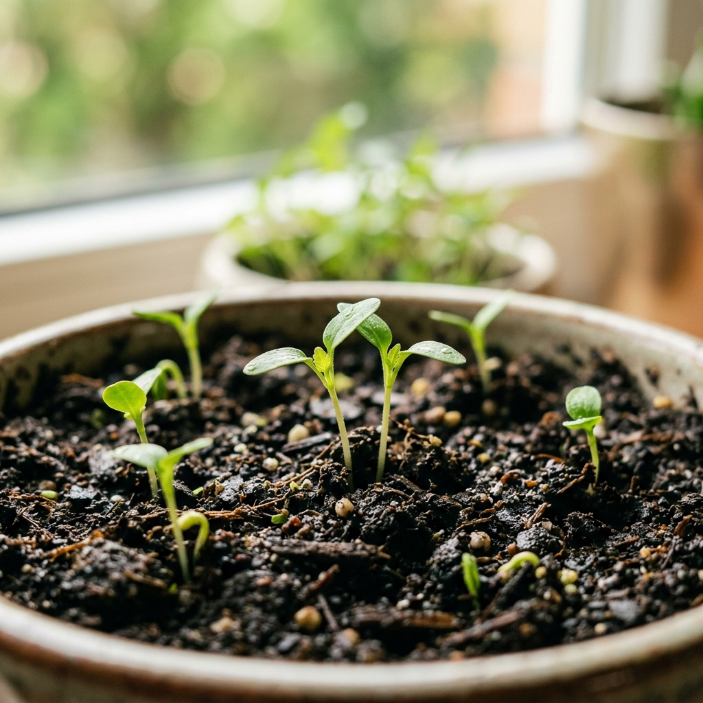
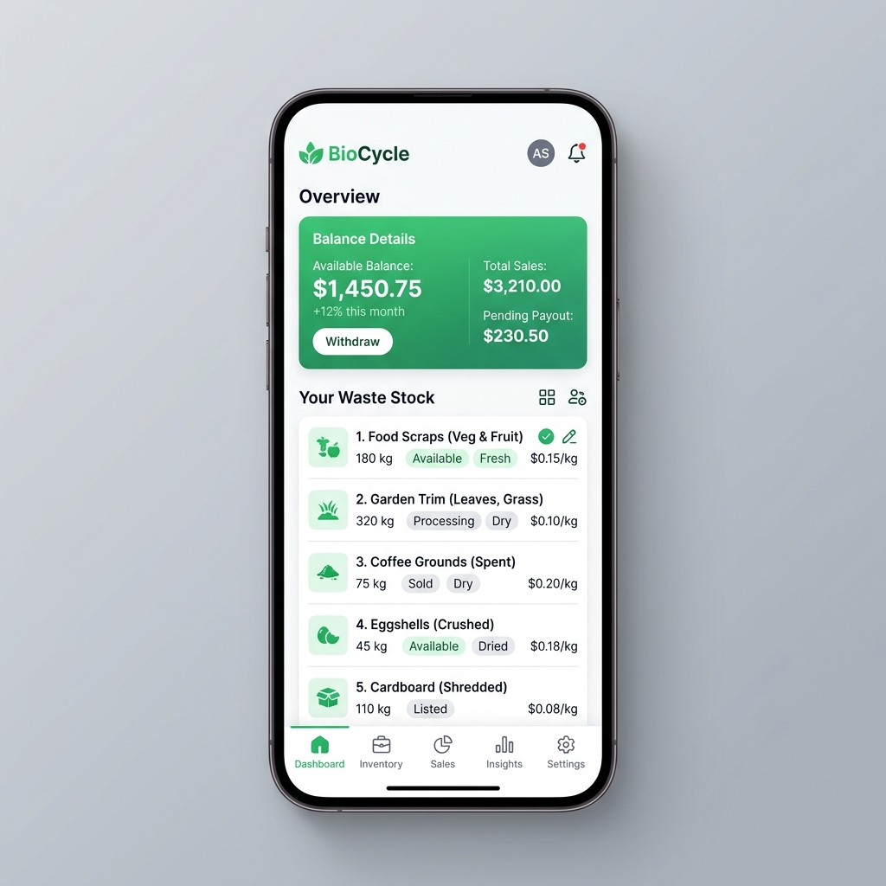
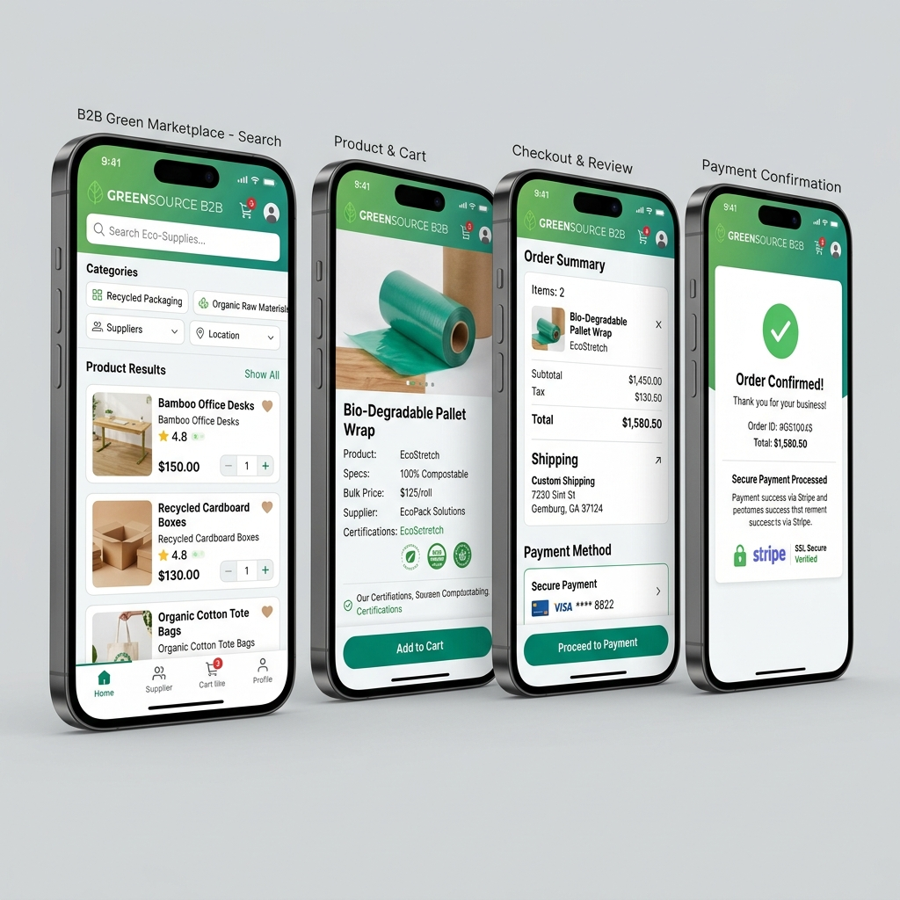

Langkah Kecil, Dampak Besar. Tempat terbaik untuk menjual dan membeli limbah organik Anda demi bumi yang lebih cerdas dan berkelanjutan.

Pendapatan Seller Baru
Rekening Bersama Olim
Sampah organik menyumbang lebih dari 50% total timbulan sampah perkotaan, namun pengelolaannya masih belum efisien. Olim hadir sebagai jembatan B2B yang mengubah limbah menjadi bernilai harga.
Penumpukan limbah organik tanpa sistem pengolahan yang tepat merusak ekosistem tanah, mencemari air, serta melepaskan gas metana berbahaya ke atmosfer bumi.
Sulitnya mempertemukan penyedia limbah organik secara langsung dengan pengolah atau industri skala menengah-besar yang membutuhkan pasokan komoditas ini secara rutin.
B2B Marketplace yang mempertemukan seller (penghasil limbah) dan buyer (industri pengolah) secara langsung dengan dukungan pembayaran aman dan standar kualitas.

Ubah biaya pembuangan sampah menjadi sumber pendapatan baru bagi bisnis dan usaha pertanian Anda.
Kemudahan mengelola produk limbah organik Anda, mengatur volume stok, dan mengelompokkan kategori limbah secara real-time.
Pantau pesanan masuk secara instan, mulai dari konfirmasi penjemputan armada hingga komoditas terkirim ke pabrik pengolah.
Transparansi pengelolaan keuangan lengkap dengan fitur pencairan saldo hasil transaksi langsung ke rekening bank Anda dengan aman.

Dapatkan bahan baku organik berkualitas tinggi dengan jaminan keamanan transaksi tingkat tinggi.
Cari komoditas limbah organik berdasarkan tipe limbah, kandungan nutrisi, lokasi, hingga tonase terdekat secara instan.
Dana transaksi ditahan di rekening penampung Olim (Escrow System) sebelum dikonfirmasi oleh pembeli untuk memastikan barang sesuai spesifikasi.
Ajukan komplain jika barang bermasalah dengan pendampingan tim mediasi Olim yang menjamin penyelesaian adil bagi kedua pihak.
Tiga langkah mudah untuk memulai transaksi sirkular Anda bersama platform Olim.
Daftarkan akun sebagai Seller atau Buyer di aplikasi Olim, lalu selesaikan verifikasi profil untuk transaksi yang lebih aman.
Lakukan pemesanan atau unggah limbah Anda. Transaksi dijamin aman melalui sistem pembayaran escrow Olim.
Setelah pengiriman selesai divalidasi, dana akan masuk ke dompet digital Anda dan dapat ditarik langsung ke rekening pribadi.
Bergabung dengan ratusan mitra lainnya yang telah berkontribusi pada ekonomi sirkular Indonesia bersama Olim.
Unduh Aplikasi Sekarang